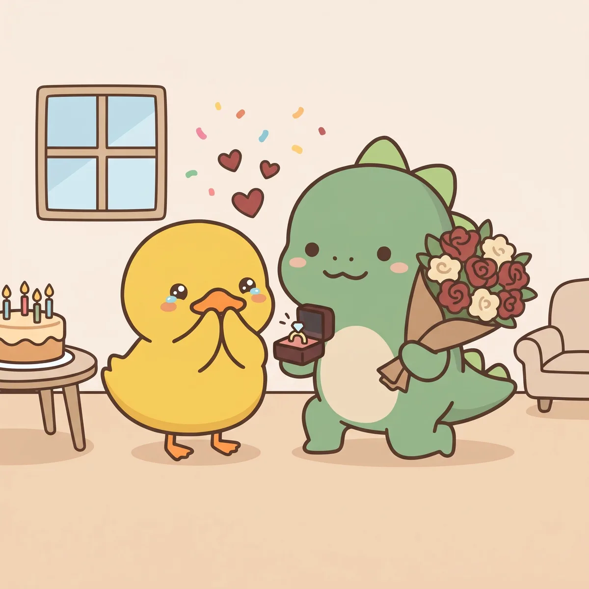
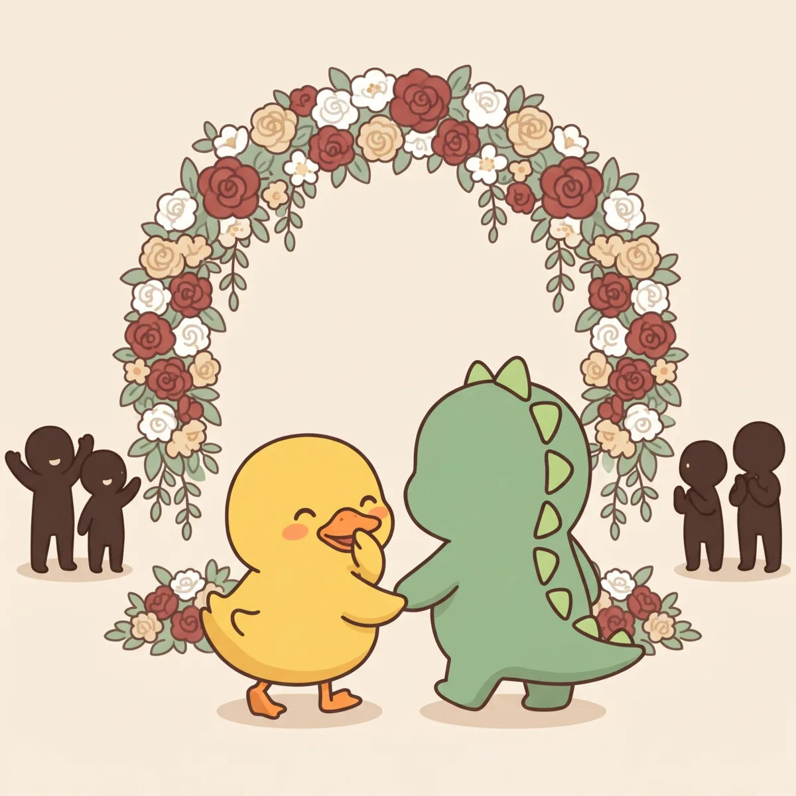

Vuốt sang để xem tiếpBấm mũi tên để xem tiếp



Lễ thành hôn

Khánh Linh & Xuân Đạt
Thứ Ba24.11.202611:00
Trân trọng kính mời
bạn và gia đình đến chung vui trong ngày thành hôn của chúng mình
Nhà gái
Ông Nguyễn Minh Tuân
Bà Hồ Thị Thu Huyền
Nhà trai
Ông Trần Xuân Kế
Bà Nguyễn Thị Thanh Xuân
Cô dâu
Nguyễn Khánh Linh
Chú rể
Trần Xuân Đạt
Tháng 11, 2026
Ngày 16 tháng 10 năm Bính Ngọ
- Đón khách
- Lễ thành hôn
- Khai tiệc
Mời bạn đến sớm một chút để chụp ảnh cùng cô dâu chú rể.
- ngày
- 0
- giờ
- 0
- phút
- 0

Địa điểm
Trung tâm tổ chức sự kiện Âu Cơ
1A Nguyễn Hữu Cầu, P. Hải Dương, TP. Hải PhòngMở Google Maps
Xác nhận tham dự
Bạn báo sớm giúp chúng mình để Vịt và Khủng Long chuẩn bị chỗ ngồi chu đáo nhé.
Bạn đã xác nhận rồi, cảm ơn nhé!

Cảm ơn bạn
Ngày vui của chúng mình sẽ trọn vẹn hơn khi có bạn.
Linh & Đạt
Ảnh cưới
Vịt và Khủng Long ngoài đời thật. Bấm vào ảnh để xem lớn hơn.